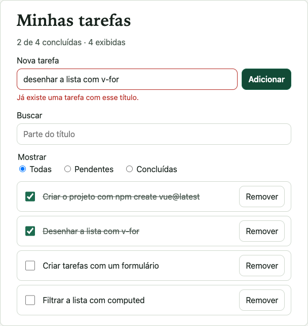

Desafio: criar tarefas com validação e filtrar a lista
Práticos 2 (lista com filtro) e 4 (validação) da unidade, refeitos dentro da Todo List.
| Critério | Evidência |
|---|---|
Formulário com v-model | Cria a tarefa sem recarregar a página |
| Validação acessível | Mensagem + aria-invalid="true" para vazio, repetido, curto |
Valores derivados com computed | Busca e situação filtram juntas; resumo certo |
v-model.trim, o usuário digita “ revisar ”. Que
valor chega ao ref? E se faltar o .prevent no
@submit?
v-model liga campo e estado; computed deriva valores
| Recurso | O que faz | Na Todo List |
|---|---|---|
v-model | Liga campo ↔ ref nos dois sentidos | novoTitulo, busca |
v-model em rádio | Mesmo princípio, outro campo | situacao |
.trim · .number · .lazy | Modificadores do v-model | v-model.trim="novoTitulo" |
@submit.prevent | Envio sem recarregar | adicionar() |
computed(() => …) | Valor derivado, com cache | concluidas, visiveis |
const busca = ref('')
const situacao = ref('todas')
// recalcula só quando tarefas, busca ou situacao mudam
const visiveis = computed(() => {
const termo = busca.value.trim().toLowerCase()
return tarefas.value.filter((tarefa) =>
combinaSituacao(tarefa) &&
tarefa.titulo.toLowerCase().includes(termo),
)
})Formulário que valida antes de criar
<form novalidate @submit.prevent="adicionar">
<label for="nova-tarefa">Nova tarefa</label>
<input id="nova-tarefa" v-model.trim="novoTitulo"
:aria-invalid="mensagem ? 'true' : 'false'"
aria-describedby="erro-tarefa" />
<button type="submit">Adicionar</button>
<p id="erro-tarefa" role="alert">{{ mensagem }}</p>
</form>
Tela real: título repetido (maiúsculas não importam) → mensagem e borda de erro.
function validar(titulo) {
if (titulo === '') return 'Escreva um título para a tarefa.'
if (titulo.length > TITULO_MAXIMO) return `Use no máximo ${TITULO_MAXIMO} caracteres.`
const repetida = tarefas.value.some(
(t) => t.titulo.toLowerCase() === titulo.toLowerCase())
if (repetida) return 'Já existe uma tarefa com esse título.'
return ''
}aria-describedby liga a mensagem ao campo; role="alert" faz o leitor de tela anunciá-la.
ObserveCombine busca “com” e situação “Pendentes”. Quem recalcula a lista?
Prática: pendentes com computed e uma regra nova
- 1
- Crie
pendentescomcomputede mostre no resumo. - 2
- Em
validar, acrescente “mínimo de 3 caracteres”. - Evidência
- “ab” mostra a mensagem nova; o resumo exibe pendentes corretas ao concluir.
Dica
pendentes pode ser calculado a partir de tarefas.value.length e de concluidas.value.
Mostrar solução (após a tentativa)
const pendentes = computed(
() => tarefas.value.length - concluidas.value)
// em validar, depois do teste de vazio:
if (titulo.length < 3) return 'Use pelo menos 3 caracteres.'{{ concluidas }} de {{ tarefas.length }} concluídas
· {{ pendentes }} pendentesv-model por dentro e por que computed não é método
<input :value="novoTitulo"
@input="novoTitulo = $event.target.value" />Modelo: o valor desce do estado para o campo (:value) e sobe do campo para o estado (@input). O .trim limpa no caminho de subida.
computed | método no template | |
|---|---|---|
| Quando roda | Só quando o que ele lê muda | A cada redesenho do componente |
| Digitar na busca | concluidas não recalcula | contarConcluidas() roda de novo |
| Uso | Valores derivados | Ações (clique, envio) |
Investigação: um defeito silencioso e um aviso
1 · Efeito dentro do computed
busca.value = busca.value.trim()Console: nenhuma mensagem npx eslint src: nada
npm run lint: 25:3 error vue(no-side-effects-in-computed-properties)
Digitado: "criar tarefas" → campo: "criartarefas"2 · Escrever num computed
<input v-model="concluidas" />[Vue warn] Write operation failed: computed value is readonlyMostrar explicação
1: o computed altera o estado que ele mesmo lê — o espaço digitado é apagado a cada tecla. O navegador não avisa, porque o código é válido; só o npm run lint (pelo oxlint) e o teste revelam. 2: computed é leitura. Para executar efeitos quando algo muda, existe watch (etapa 12).
Pesquisar: validação acessível e boas práticas do computed
Revise a acessibilidade deste formulário Vue: [cole o <form>].
Verifique rótulo, aria-invalid, aria-describedby e o anúncio
da mensagem de erro. Para cada sugestão, cite a página da MDN ou do WAI-ARIA que a
justifica. Não troque a validação por biblioteca externa.
Onde procurar
- Computed — Best Practices (“Getters should be side-effect free”)
- MDN — aria-invalid
Verificação sem IA
- 1
- Reescreva
v-model="busca"com:valuee@input. - 2
- “Total de tarefas atrasadas”:
refatualizado à mão oucomputed? - 3
- O que acontece sem o
.preventno@submit?